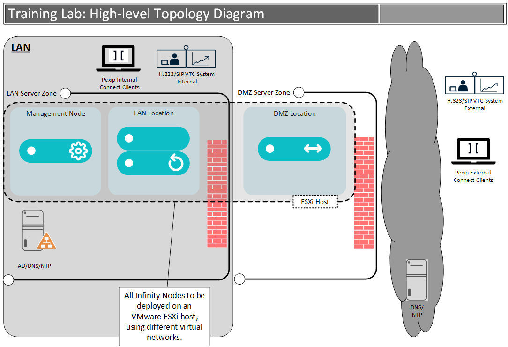

The primary goal of this lab is to show you how to plan, deploy and provide the initial configuration for a Pexip Infinity solution. The lab closely follows the eLearning module, "A general installation of Pexip Infinity", so we will drop in a video from that series when needed, such as now 😊:
In this lab, you will deploy and install a Pexip Management Node, two internal Pexip Conferencing Nodes (within the LAN System Location), and one external Pexip Conferencing Node (within the DMZ System Location). First, you will deploy both Conferencing Nodes in the LAN location using the Transcoding role. You will then deploy a Conferencing Node in the DMZ location, which will initially also use the Transcoding role. In a later task, you will switch the DMZ node to the Proxying Edge role (this is purely a learning exercise, and we will explain why we have done this later). Both locations can handle standards-based SIP/H.323 and WebRTC video traffic and integrate with different ecosystems in later lab exercises. First, however, you will create some essential services to test out specific call flows and test basic system functionality.
The topology diagram below outlines the high-level architectural view of what your deployment will look like:

This lab guide is broken into tasks, and each task has two main components (most of the time):
Each task has a “step-by-step” set of instructions to help you complete the required configurations and testing. This tells you “What" to do, but not "Why" you are doing it.
At the top of each page, there is usually a “More Info” button. You should take time to read this descriptive text that pops up when you click this button as it provides background information to the lab exercises, along with why you might deploy, configure and administer Infinity in the way we suggest.
As an additional challenge, users that have previous experience with Pexip could attempt to deploy and configure Pexip using the information in this section alone (i.e. do NOT follow the step-by-step guide 😱).
As an accompaniment to the lab guide, there is a lab sheet containing all the necessary details (such as IP addresses, FQDNs, etc.) that you will use to configure your deployment. At the top of each task in the lab guide, there is usually a paragraph outlining the lab sheet section that relates to the task.
Each task refers to the relevant lab sheet section if required. For your information, we have tried to keep the usernames consistent and passwords simple, with most passwords set to a common value that you can see in the lab sheet.
Please refer continuously to https://docs.pexip.com, our official technical documentation site for Pexip Infinity. In addition, we will provide you with links in each section to various documentation pages where appropriate.